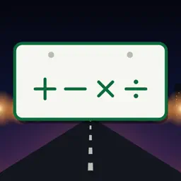
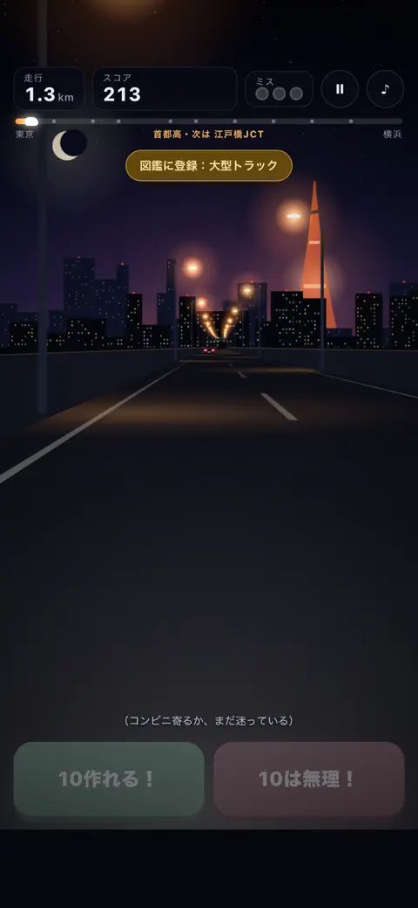
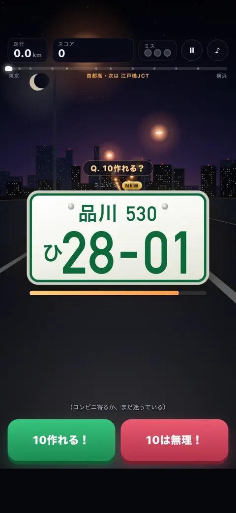

4つの数字で10を作る暗算ゲーム（iPhone）
ナンバー暗算ドライブ
同じナンバーが、全員に。
今日のドライブで暗算勝負。
夜の高速道路で、すれ違う車のナンバー4桁。＋−×÷とカッコで「10」は作れる？ 数秒で判断して、目的地をめざします。電車の切符や車のナンバーでやった、あの遊びです。
- 毎日・みんな同じナンバー
- ランキング
- 5本の高速道路
無料・広告あり／iPhone（iOS 18 以降）
▶ プレイのようす（音なし）
ナンバー暗算ドライブとは？
ナンバー暗算ドライブは、夜の高速道路で、すれ違う車のナンバー4桁で10が作れるかを数秒で判断する暗算ゲーム。毎日の「今日のドライブ」はみんなに同じナンバーが同じ順番で来て、ランキングでくらべられます。無料（広告あり）のiPhoneアプリ。
こんな人に：切符や車のナンバーで10を作る遊びをしたことがある人。
- 料金無料・広告あり
- 対応iPhone（iOS 18 以降）
- ジャンル🧩 パズル・脳トレ
- 今日の問題毎日0時（日本時間）にかわる





← 横にスクロールできます →
「今日のドライブ」で勝負
- みんな同じナンバーその日は、だれのところにも同じナンバーが同じ順番でやってきます。
- 1回目が本番ランキングに入るのは、その日のさいしょの1回だけ。
- 今日と今週「今日」の順位と「今週の合計」、着いた場所の数のランキングもあります。
ランキングには、自分で決めたニックネームと記録だけがのります。
⏰ 次の問題まで
毎日 0時（日本時間）に、新しい問題になります。
こんな人におすすめ
- 切符や車のナンバーで10を作る遊びをしたことがある人
- 通勤や休憩のすきま時間に、頭の体操をしたい人
- 夜の高速道路の雰囲気が好きな人
遊び方は3ステップ
- 見るすれ違った車のナンバーが大きく表示されます。
- 考える4つの数字を1回ずつ使い、＋ − × ÷ とカッコで10が作れるか判断します。
- 答える「10作れる！」か「10は無理！」。答えのあとに、10になる式も見られます。
📘 ルール
ナンバーで暗算
夜の高速道路を走りながら、すれ違う車のナンバー4桁で暗算します。
10 が作れる？
4つの数字を1回ずつ使い、＋ − × ÷ とカッコで 10 が作れるか（並べかえ OK）。例：11-58 → 8 ÷ (1 − 1 ÷ 5) = 10。
はい／いいえで答える
「10作れる！」か「10は無理！」をタップ。1まい約6秒で、はやく答えるほど点が高い。
素数モードも
ナンバー4桁が素数かどうかを判断するモードや、2つがまざるミックスもあります。
特徴
- 5本の高速道路首都高 横羽線・湾岸線、東名、阪神高速 神戸線、札樽道
- 素数モードもナンバー4桁が素数かどうかを判断
- ご当地メモ着いた土地の名物・名所・地名の由来
- 図鑑車種とナンバーご当地ナンバーや、ぞろ目などの珍しい数字
🆕 さいきんのアップデート
バージョン 1.0.9（2026年11月19日）
- 「あそびかた」に「振動」のオン・オフを入れました。オフにすると、ブルブルしなくなります
- 小さい画面で文字やボタンが切れていたところを直しました
- どのコースがむずかしいかを知るため、名前のない遊びの数だけを集めるようにしました（「？」のあそびかたでオフにできます）
💬 よく聞かれること
車のナンバーで10を作る遊びのアプリは？
ナンバー暗算ドライブは、すれ違う車のナンバー4桁を1回ずつ使い、＋−×÷とカッコで10が作れるかを判断する暗算ゲームです。無料（広告あり）です。
テンパズル（4つの数字で10を作る）の練習アプリは？
ナンバー暗算ドライブで、4つの数字で10を作る問題を、1まい約6秒のテンポで解けます。毎日の「今日のドライブ」はみんな同じナンバーが同じ順番で出ます。
📖 ことばの説明
くわしい遊び方
夜の高速道路を走りながら、すれ違った車のナンバー4桁で「10が作れるか」を判断します。4つの数字を1回ずつ使い、＋ − × ÷ とカッコで10になれば「作れる」です。正解すると目的地に近づきます。
- 問題：10作れる？／素数？（35-24 なら 3524 が素数か）／ミックス
- ルール：ふつう（スコアを競う）／タイムアタック（目的地までのタイムを競う）
- 目的地なし：終点で折り返しながら走り続けます
- 図鑑：正解したナンバーの車種・ご当地ナンバー・珍しい数字が集まります
- 今日のドライブ：毎日かわる1本。その日は、だれのところにも同じナンバーが同じ順番で来ます。ランキングに入るのは、その日のさいしょの1回だけです
よくある質問
無料ですか？
はい、無料でダウンロードして遊べます（広告あり）。App Store のページからどうぞ。
どの端末で使えますか？
iPhone（iOS 18 以降）で使えます。Android 版はありません。
音が出ません
画面右上の ♪ ボタンで音のオン・オフを切り替えられます。iPhone の音量も確かめてください。
途中でやめたい
運転中に右上の Ⅱ ボタンを押すと一時停止します。「ここで終える」で結果を見ることも、「タイトルにもどる」で最初から選び直すこともできます。
記録や図鑑を消したい・引き継ぎたい
記録はこの iPhone の中にだけ保存しています。アプリを削除すると記録も消えます。ほかの端末への引き継ぎにはまだ対応していません。
ランキングの名前や記録を消したい
ランキングの画面のいちばん下にある「ランキングから自分の記録を消す」を押すと、ニックネームと記録がサーバーからすぐに消えます。ふさわしくない名前を見つけたときは、その行の「…」から通報できます。
「10が作れる」と表示された式が分からない
答えのあとに、10になる式を1つ表示しています。割り算で分数を使う式もあります（例：8 ÷ (1 − 1 ÷ 5) = 10）。
お問い合わせ
不具合やご要望は、メールでお知らせください。お使いの iPhone の機種と iOS のバージョンを書いていただけると助かります。